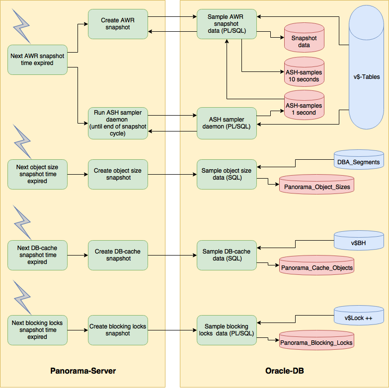
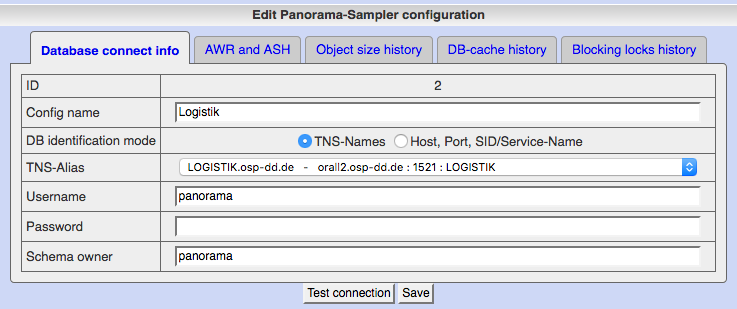
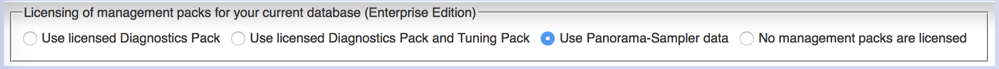

Panorama-Sampler for Oracle databases
'Panorama-Sampler' is an add-on for Panorama which allows it's own database workload recording as alternative to use of AWR data.
This enables you to use Panorama's functions for evaluation of historic workload info:
- with any database edition including Standard Edition
- without licensing of Diagnostics Pack for Enterprise Edition

Functions
Panorama-Sampler delivers several functions for recording of historic workload information
- Replacement for Active Workload Repository (AWR) and Active Session History (ASH)
- Sampling of storage object sizes
- Sampling of DB-cache usage by objects
- Sampling of detailed blocking lock information
Evaluation and visualization of recorded data is possible with Panorama's web client app.
Usage
Configure your Panorama server instance for Panorama-Sampler
Configure data sources for sampling with Panorama-Sampler
To activate sampling for your database, add it at function "Panorama-Sampler config" in menu "Spec. additions" and configure:
- TNS-Alias resp. host, port, SID/service-name
- user/password for the schema containing Panorama's tables for workload recording
- Schema name if workload tables should be created in different schema than used for connection. Important e.g. for CDB where you need to login with system account to sample workload of all PDBs
- For each of the four topics AWR/ASH, size evolution, cache-usage and blocking locks you can define separately:
- Activate or deactivate sampling
- Period between snapshots
- Retention time before housekeeping
- Further topic specific settings

The configured connection user needs the the following grants to work:
GRANT CONNECT, RESOURCE, CREATE VIEW
to create tables and views- Enough quota on it's default tablespace to create objects
GRANT SELECT ANY DICTIONARY
to select from dictionary tablesGRANT EXECUTE ON DBMS_LOCK
as SYS to allow execution of DBMS_LOCK.SLEEP in active session sampler- The right to create objects in different object schema if connection user and object schema are different
If the connection user has the grant
GRANT SELECT ANY TABLE
in addition, than PL/SQL-packages are created for the execution of sampling.
If the connection user doesn't have this grant, than larger anonymous PL/SQL is executed at each snapshot instead of package call that may result in a bit more parse effort.
Reason for need of possible anonymous PL/SQL is: you may not select from V$-tables from inside PL/SQL-packages because this right is based on role SELECT_CATALOG_ROLE and roles are not propagated to PL/SQL objects.
Choose access on Panorama-Sampler's data in Panorama's web client application
Panorama client automatically recognizes existence of Panorama-Sampler data during logon and offers you to choose this data.
You can choose one of three options how Panorama gets access to historic workload info for this database:
- Use Oracle's AWR data which requires Enterprise Edition and licensing of Diagnostics Pack for that database
- Use workload data recorded by Panorama's own sampling engine
- Don't use historic workload info, but this way Panorama's functions are strongly reduced

Please consider that Panorama-Sampler's tables are created deferred at first snapshot execution.
This way you can choose Panorama-Sampler only after first snapshot execution.
Licensing
You may use Panorama-Sampler for free under the terms and conditions of
GNU General Public License.
Function volume
Until now Panorama-Sampler offers replacement for the follwing AWR views:
- gv$Active_Session_History
- DBA_Hist_Active_Sess_History
- DBA_Hist_Cache_Advice
- DBA_Hist_IOStat_Filetype
- DBA_Hist_Log
- DBA_Hist_Resource_Limit
- DBA_Hist_Seg_Stat
- DBA_Hist_Service_Name
- DBA_Hist_Snapshot
- DBA_Hist_SQL_Bind
- DBA_Hist_SQL_Plan
- DBA_Hist_SQLStat
- DBA_Hist_SQLText
- DBA_Hist_StatName
- DBA_Hist_Sysmetric_History
- DBA_Hist_Sysmetric_Summary
- DBA_Hist_System_Event
- DBA_Hist_SysStat
- DBA_Hist_TopLevelCall_Name
- DBA_Hist_WR_Control
Further implementation details
- For RAC-systems configure one sampler-entry for each RAC-instance with instance-specific service name or given SID.
- You may use different master-passwords. This results in one configuration-set per master-password. Sampling is active only for the configuration set of the master password Panorama is started with
- Sampling cycle for function similar to Active Session History is fixed to 1 seconds for short term storage (currently until next snapshot) and 10 seconds for long term storage
- Your configured connection passwords are stored in file system at Panorama server encrypted with a combination of server key (see Panorama: What about security) and your master password
Limitations compared to AWR
Sampling of active sessions
- Plan-line-ID and operation are not recorded because of missing source in v$-views
- Only top level SQL is recorded as listed by v$Session.sql_id
- I/O-Requests and amount read/written is not recorded because sampling from v$SesStat is too slow for one sample per second
Sampling of segment statistics
- 'gc cr blocks served', 'gc current blocks served' and 'chain row excess' are not available from v$SegStat